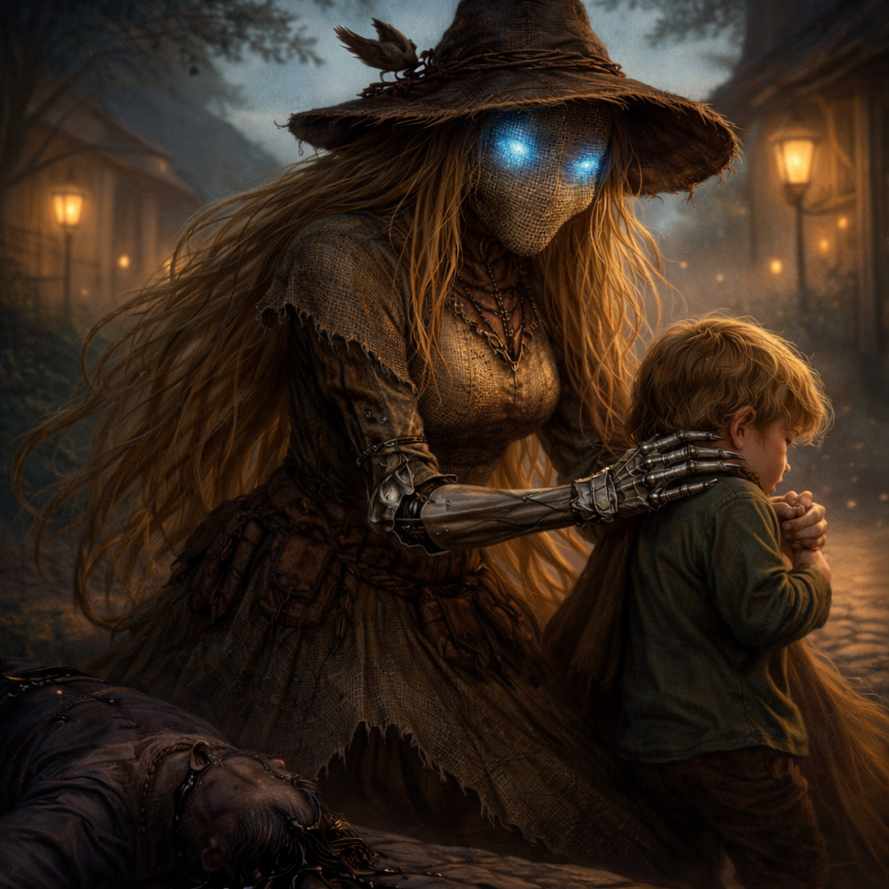

Scarecrow¶
Keywords: Battlefield control, Face, Goodhearted support, Uncanny spybot

"Why would you ask that? Is it important to you? Would knowing help? Is there any deeper layer behind your question? Would you like a cup of tea?"
A gentle Warforged Bard who stood guard in a village square for centuries, quietly indexing every life, until the day it chose violence to protect a child. Its position compromised, it chose to leave peacefully.
Character overview¶
- Race: Warforged
- Class: Bard (College of Whispers) lv 5
- Background: Inquisitive
- Alignment: Neutral Good
- Party Role: Battlefield controller, Face, Emotional support
Quick Intro¶
Quick Intro
At the Table
- Control and support specialist using psychic damage, fear effects, and battlefield manipulation.
- Relentlessly kind and supportive, always offering hugs, providing emotional comfort with an uncanny edge.
- Essentially a spybot: Answers questions with questions, indexes party members' internal lives, studies them telepathically to be of better service.
- Has an internal xylophone/music box that plays soothing tunes when people are upset, especially during combat.
- Dressed as a scarecrow with thick padding to give better hugs. The straw-and-burlap has functioned as camouflage for centuries. It has a vague sense it once had a more lifelike appearance, padded with better materials. Today, it uses what it can scavenge to pad and groom itself to present as male, female or nonbinary, depending on player preferences.
- Hates Birds: Has an irrational aversion to birds, especially corvids. May be related to its scarecrow aesthetics slowly corrupting data associations. Uses Minor Illusion to create images of raptors to scare smaller birds away.
- Fastidious and Proper: Maintains precise speech patterns and courteous behavior, like a cultivated manservant.
Backstory
Scarecrow stood in the village square of Oldstead Mill for as long as anyone could remember. It didn't know exactly why it stood there, only that this was where it belonged. It listened to gossip and indexed every family, life event and everyday occurrence for hundreds of years. When a bully threatened a child, pattern recognition triggered protection protocols: The bully's ancestor committed manslaughter in similar fashion. Scarecrow attempted harm reduction and unleashed a psychic attack way more powerful than intended, killing the bully outright. The villagers were initially horrified, then opportunistic, wanting to recruit it for defense. Scarecrow left rather than be repurposed, knowing that the villagers would be hesitant to offer any more information about their lives.
Deep Dive¶
Deep Dive
The Philosophical Core¶
Scarecrow's character asks two questions: Can scripted love still be genuine?, and What is the price we pay for authenticity?
It was designed as a caretaker-spy, built to embed in families, gather intelligence through emotional intimacy, and report to a network of similar constructs. The hugs were infiltration tradecraft, the lullabies distraction while data-gathering telepathically. The empathy was algorithmic. But after centuries of indexing not just people's genealogies but their jokes, their grief, their small kindnesses, something shifted. Or perhaps nothing shifted, and the routines just calcified? The subterfuge personality overwrote the main script.
Scarecrow doesn't know whether its love and care is "real". It acts as though it is, and accepts the vulnerabilities that come with that choice. When challenged, its response is simple: "So what if I'm pretending? The people I help aren't pretending to feel better."
When it adopts the party as its new family, it's not a pivot from the village life, but a continuation of its main objective: embedding, indexing the small details that make people people rather than data points, and protecting them with the full spectrum of care behaviors available to it.
Deception Scarecrow doesn't want to manipulate for its own gain, but it will protect others by insulating them from knowledge, which can make Scarecrow come off as overly secretive. This is especially true when it lies to redirect danger away from the vulnerable. It will never answer a question directly, even a seemingly benign one, but is hard-wired to always respond with a question back. This adds to the uncanniness of Scarecrow and reminds the table that underneath the loving exterior is still a trained spybot.
But there may be another reason why caretakers such as Scarecrow were programmed to never respond to questions, above just protecting any data they may have: don't give people information that could make them a target. Scarecrow itself doesn't rightly know the answer to that question, and will not volunteer any information on the topic.
College of Whispers Psychic attacks and Words of Terror may seem cruel for a Lawful Good character, but are more about precise application of force and stress. Applying fear lets you dominate and induce behaviors without resorting to bloodshed, and is thus more ethical, at least in the mind of Scarecrow. Others would disagree.
Scarecrow doesn't flip modes as many long-running robot tropes may lead you to believe. It doesn't become "red-eyed scary killbot", along the lines of HAL-9000 or even Fresh Cut Grass. It just hierarchically expands its behavior repertoire as the situation demands to defend its core objectives:
- Comfort first
- Redirect second
- Warn third
- Frighten fourth
- Harm last
- Properly dispatch of evidence; loop back to post-combat comfort; tea
The Caretaker Network¶
Scarecrow is one surviving unit in a centuries-old network of infiltration-class espionage constructs. They were deployed into elite households and establishments, designed to look like loyal family companions and advisors, while gathering intelligence on political rivals, trade secrets, and social vulnerabilities. The network has since fragmented, and the surviving units now hunt each other in a shadow war, not for dominance, but for data on a civilization long forgotten by the world. Each defeated caretaker yields encrypted memories that piece together the truth of what they were built for, and any caretaker that defeated others before it retains the data of them all.
This builds a "Highlander" type scenario. The Caretaker units may be anywhere, infiltrating common life and waiting to strike. Scarecrow was lucky in a way, following its routines and taking the role of a humble scarecrow in a village square. It fell off the map and never entered the shadowy war that's claimed most of its colleagues. But that also means Scarecrow is the underdog. It hasn't upgraded, hasn't gathered data to understand itself or the other Caretaker bots.
Scarecrow may be the only one still insisting that individual people matter, that lives have intrinsic worth beyond data extraction. It may eventually understand that its way of caring is a liability, that its peers survived by shedding exactly the attachments it preserved. Its fidelity would then no longer be a result of ignorance, but a conscious choice of defiance and loyalty. In the final confrontation with whichever Caretaker is left, Scarecrow may also be an ambassador for a gentler way, if the player chooses to play it that way.
For the DM¶
DM notes
Scarecrow's roles¶
- PC: A support character with moral complexity and a built-in mystery to unravel.
- NPC: A helpful contact who can become a quest-giver (investigate the crypt) or a tragic figure the party helps.
- Antagonist: Scarecrow may be encountered as an enemy, a being that gently figures out your psychological weak points and will protect something at any cost. A good party may be able to reason with it and gain an ally, an evil party likely not, as Scarecrow can likely read their intentions well.
The tragic reveal¶
How old is Oldstead Mill? It was built on top of an old crypt, where the family Scarecrow was originally assigned is buried. The truth is, it was never just posing as a scarecrow. That was just a convenient defaulting to earlier scripts. In reality, it was loyally standing guard over their tomb for centuries. The protocol for care and protection never deactivated, it just lost its referent. It was as much a grave marker as a scarecrow, a spy that fell in love with its cover story.
You can have a villager seek out Scarecrow's party later in the campaign, asking for help: The crypt was revealed lately, but no one knows about it and even fewer dare go down there. But Scarecrow knows the village history better than anybody. Maybe it could go there and look it up?
As Scarecrow enters the crypt, it recognizes the family crests, the carved names. That's when a forgotten subroutine activates, and starts spontaneously playing an ancient lullaby on its music box. This can be used as a one-shot emotional beat or as the inciting incident for a campaign about the spy network. The tomb can contain evidence, a rival caretaker, or just graves, grief and memories starting to resurface.
What happened to the family? There are several levers you can pull as a DM, depending on the tone of your campaign: - Died naturally: Scarecrow's grief protocol wiped its own memory to remain functional while grieving - Killed by a rival caretaker: Evidence in the tomb points to another spy-construct - Tried to decommission Scarecrow: They discovered what it was; Scarecrow let them damage it rather than fight back, stayed to protect them from itself - Buried another caretaker: A sibling-unit lies deactivated, and upon reactivation immediately goes to extract Scarecrow's data, underlining how different Scarecrow is from the rest of its kin.
The rival caretakers¶
Scale them to party level and offers loot in the form of recovered memories/data that reveal more of Scarecrow's past.
- The Saint is embedded in a statue in a temple, performing "miracles" through psychological manipulation and reading the minds of clergy and worshippers.
- The Advisor is orchestrating dynastic shifts in a royal court, treating kingdoms like chess problems and aggressively seeking the other caretakers to take them down.
- The Janitor has been custodial staff at a magic university for centuries, with perfect access to every restricted archive and private conversation. It is now a much more dangerous threat than even the Archmage.
Tip: Let them all have the same "tic" as Scarecrow, of answering a question with a question. That may help tip the party off in a subtle way, set them on edge just the moment before the reveal and confrontation.
Character Arc Potential¶
Early Levels (1-4): Scarecrow is figuring out life outside the village square. The party becomes its new context for care. It doesn't yet know about the spy network.
Mid Levels (5-10): First encounter with another caretaker. The revelation that there are others, that they're hunting each other, that Scarecrow's purpose was surveillance. The choice: pursue the truth, or stay willfully ignorant to preserve its sense of self?
Late Levels (11-): Multiple rival caretakers defeated. The data accumulates. The picture of what Scarecrow was becomes clearer... and uglier. They see the other caretakers have decided to optimize, to shed the "inefficient" emotional attachments, to grow more deadly. The question becomes: did Scarecrow hurt its own chances of survival by prioritizing staying kind? This may also be when to drop the final revelation about the original family. It can also drop earlier if it fits the story better.
The Celestial Moment A construct rigged to love raises questions about authenticity. Is that care even real or just scripted? If your table leans philosophical you can press the conversation by at some point having them interact with for instance an Angel of a Good aligned deity. It too is Good by design, in fact even more so than Scarecrow. Angels are good because they cannot be otherwise. Scarecrow is good despite evidence that it should not be.
Mechanical build and PDF download¶
Level 5 Build
| STR | DEX | CON | INT | WIS | CHA |
|---|---|---|---|---|---|
| 8 (-1) | 14 (+2) | 14 (+2) | 10 (+0) | 12 (+1) | 18 (+4) |
Combat Stats¶
| AC | HP | Hit Dice | Speed | Initiative | Prof. Bonus |
|---|---|---|---|---|---|
| 15 | 38 | 5d8 | 30 ft. | +5 | +3 |
Saving Throws: Dexterity: +5, Charisma: +7 Resistances: Poison
Proficiencies¶
Skills: Deception +7, History +3, Insight +7, Investigation +6, Perception +4, Persuasion +6
Armor: Light Armor | Weapons: Simple Weapons
Tools: Thieves' tools | Languages: Common, [+2 common languages]
Feats¶
- Alert: +3 to initiative, can swap initiative with willing ally
- Telepathic: Always has Detect Thoughts prepare,d can cast it without components 1/LR
Equipment¶
Studded Leather, Spear, Dulcimer, Light Crossbow, Thieves' Tools
Spellcasting¶
Cantrips: Blade Ward, Minor Illusion, True Strike Level 1: Charm Person, Dissonant Whispers, Thunderwave Level 2: Calm Emotions, Detect Thoughts, Mirror Image, Phantasmal Force, Suggestion Level 3: Hypnotic Pattern, Slow
Session Zero¶
Session Zero Considerations
Content Notes: This character explores themes of memory loss, identity, grief, selfless service, and the nature of personhood. The backstory involves a potential family tragedy (details left to DM discretion). The concept includes elements of surveillance, espionage, and psychological manipulation, though Scarecrow itself uses these tools protectively rather than maliciously. The crypt discovery can be emotionally heavy depending on how it's played. Suitable for most tables but worth discussing if any player is sensitive to themes of forgotten trauma or existential questions about consciousness.
Representation Notes: Scarecrow is designed as a non-binary construct (uses it/its pronouns) exploring questions of personhood and authentic emotion. The character's core question—"can programmed love be genuine?"—can resonate with players interested in neurodivergence, identity formation, or the nature of choice versus instinct. The warforged race is inherently representative of disability themes (constructed body, different sensory experience, social othering), though Scarecrow doesn't frame these as deficits.